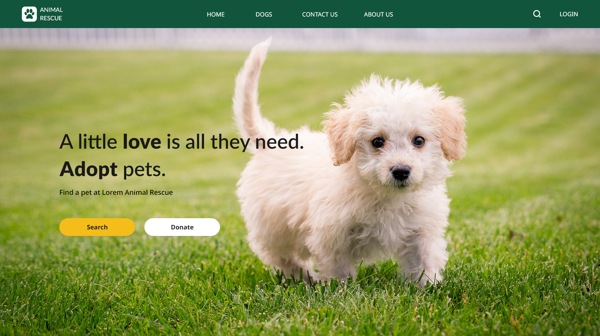

Animal Rescue
A User Interface Design case study. The purpose of this project was to design a Animal Rescue website and work with prototyping and make it high fidelity.
Homepage
Old

New

A User Interface Design case study. The purpose of this project was to design a Animal Rescue website and work with prototyping and make it high fidelity.